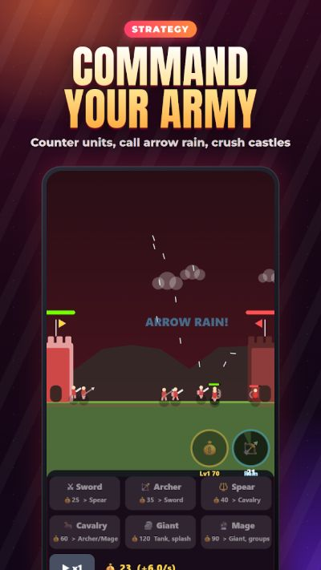
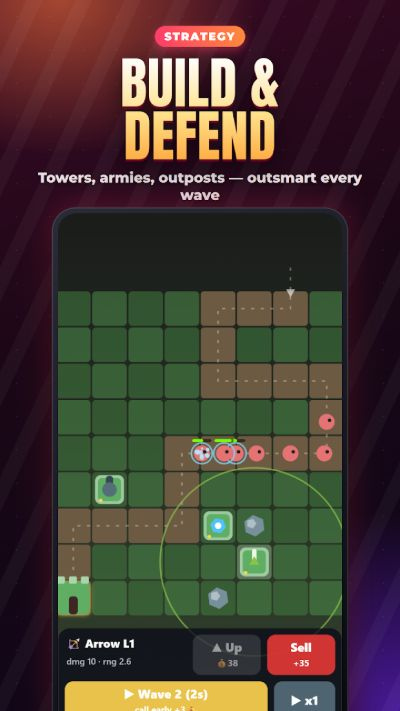
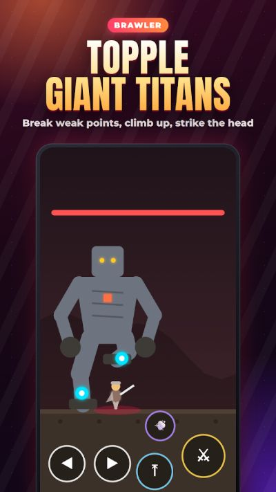
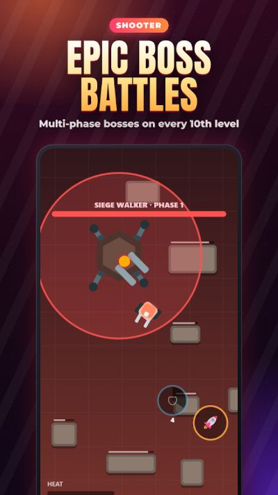

Action Advance: 100+ Offline Action Games in One App — from the TTGO Game Channel.
Five kinds of action
🔫 Shooting
Zombie survival nights, sniper missions, twin-stick mechs, space shooter waves with bullet-hell bosses, a helicopter gunship and pirate ship broadsides.
🥊 Fighting
Kung fu, sword duels and samurai dash attacks, a street beat ’em up, sumo and wrestling, the gladiator arena — and giant titans you topple by climbing up and striking the head.
🏃 Platformers
Pixel-knight runs, grappling hooks, wall jumps, rising lava, temple traps and a mine cart ride.
🧙 Roguelikes
Survive the swarm and pick a perk every level up, crawl dungeons, combine spells, raise an undead army and play real-time card battles.
🏰 Strategy & tower defense
Build towers, defend your castle, command an army that counters enemy units, and crush forts with a catapult.




Screenshots from the Action Advance Google Play listing.
Boss fights are the point
Bosses come in multiple phases, and many games put one on every tenth level. The pattern that works: spend the first phase dodging and learning the attacks, then commit when you have seen the opening.
Why offline matters for action games
Action games hate lag. Because everything in Action Advance runs on the phone, there is no connection to drop mid-fight — which also makes it a solid pick for flights and commutes. See our take on why offline games are booming.
More on the Action Advance page. Prefer quick browser action instead? Try 7 quick action games for a short break.